Let the Game Begins!
Jogos mortais (Saw) é uma franquia de filmes de terror, sendo a mais bem sucedida de todos os tempos. Seu arco está em torno da vida e obra do serial killer John "Jigsaw" Kramer, que, ao colocar suas vítimas em situações de tortura física e psicológica extrema, se conseguirem sobreviver, estarão de uma vez por todas reabilitadas.
John Kramer - JigSaw
Sem ser tecnicamente um serial killer, pois ele nunca matou efetivamente, John Kramer é um paciente de câncer terminal que viu em vários momentos sua vida se transformar. Pelo aborto de seu filho Gideon, a separação de sua amada Jill Tuck, por um câncer mal diagnosticado, e por um suicídio não concluído, John acredita que a vida é um dom, e que não se deve desperdiçá-la. Logo, aqueles que de alguma forma criaram as situações que levaram Kramer a desistir da sua vida, são testadas por ele, em um jogo de vida ou morte, em que se vencerem, terão sua vida validada nas métricas de Kramer. Porém, vencer significa se libertar das atitudes que desperdiçam o dom da vida que lhe foi dado, ou seja, significa se libertar do pior em você.
Saiba mais sobre cada filme
Escolha um filme
- Saw
- Saw II
- Saw III
- Saw IV
- Saw V
- Saw VI
- Saw 3D
- Jigsaw
- Spiral
- Saw X
-
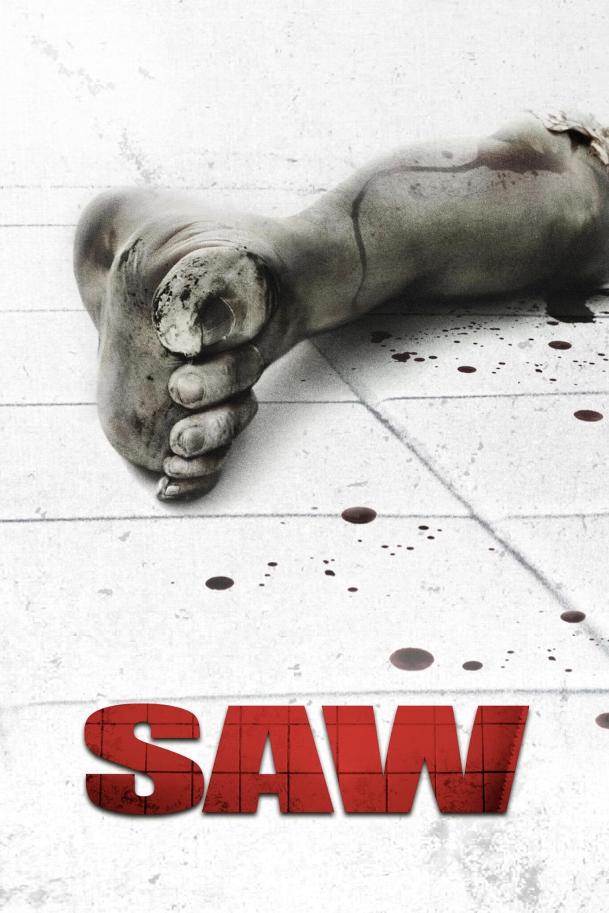
Jogos Mortais
2004
O filme conta uma narrativa não linear que gira em torno do mistério do serial killer Jigsaw, que testa a vontade de viver de suas vítimas submetendo-as a "jogos" mortais em que elas precisam infligir grande dor física a si mesmas para sobreviver. A história segue as últimas vítimas de Jigsaw (Adam e Dr. Gordon), que acordam em um banheiro grande e em ruínas, e um deles recebe a ordem de matar o outro para salvar a própria família.
Orçamento: $ 1,2 mi
Bilheteria: $ 103 mi
Retorno: 8.483%
-
Jigsaw
Tobin Bell -
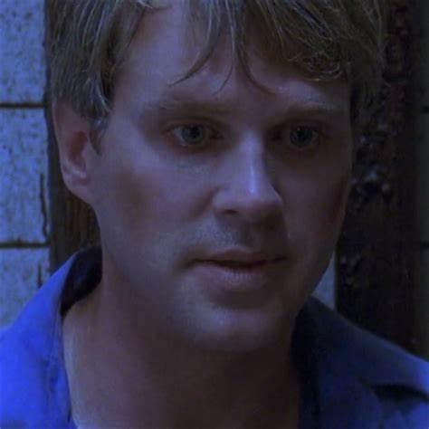
Dr. Laurence Gordon
Cary Elwes -
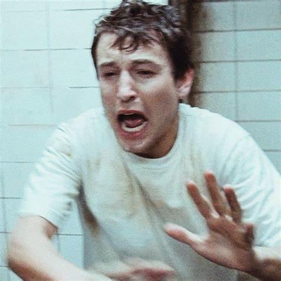
Adam
Leigh Whannell -
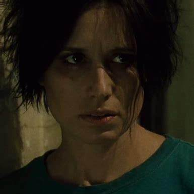
Amanda
Shawnee Smith -
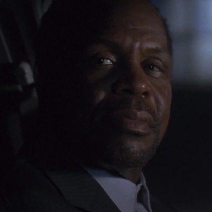
David
Danny Glover -
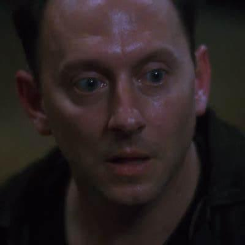
Zep
Michael Emerson
-
-
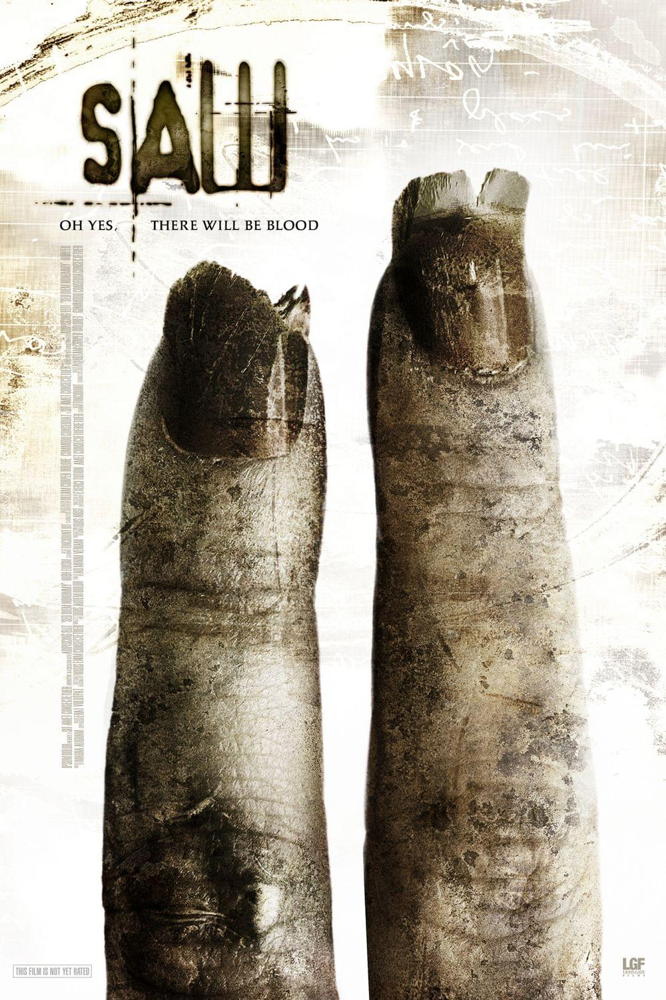
Jogos Mortais II
2005
Em Jogos Mortais II, Jigsaw retorna para expor para o mundo sua motivação e até onde o desespero e a não obediência às leis levam as pessoas. O detetive Eric Matthews terá em suas mãos a vida de 8 pessoas presas em uma casa abandonada, incluindo seu filho e a pupila de John, Amanda. Matthews tem duas horas para entender a sua relação com as pessoas naquela casa, e com o jogador que o levou a colocar as mãos em John. Entender quais atitudes levaram Matthews até este ponto, vendo seu filho sofrer, e não repeti-las, será o ingrediente mínimo para que Matthews entenda o que John propõe e como ele poderá salvar aquelas pessoas, se é que tenham salvação.
Orçamento: $ 4 mi
Bilheteria: $ 147 mi
Retorno: 3.575%
-
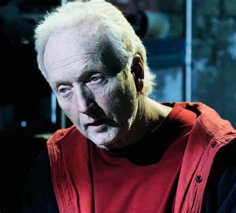
John Kramer
Tobin Bell -
Amanda
Shawnee Smith -
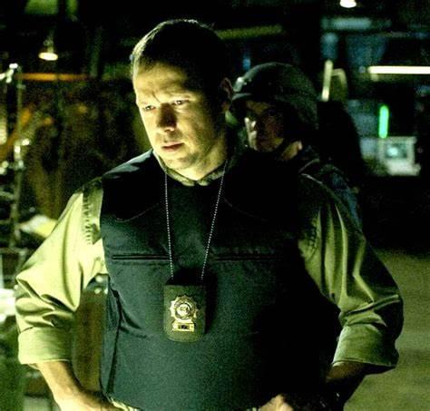
Eric Matthews
Donnie Wahlberg -
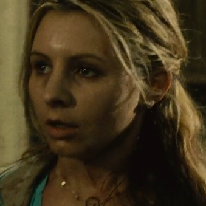
Laura
Beverley Mitchell -
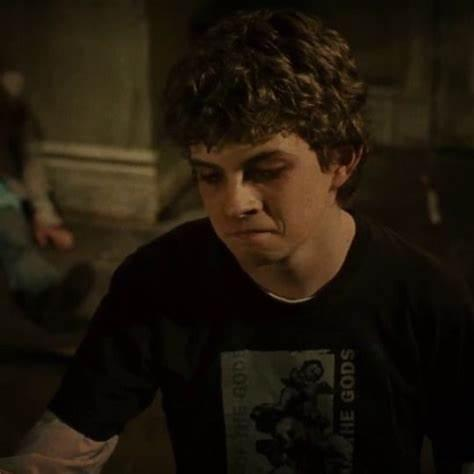
Daniel Matthews
Erik Knudsen -
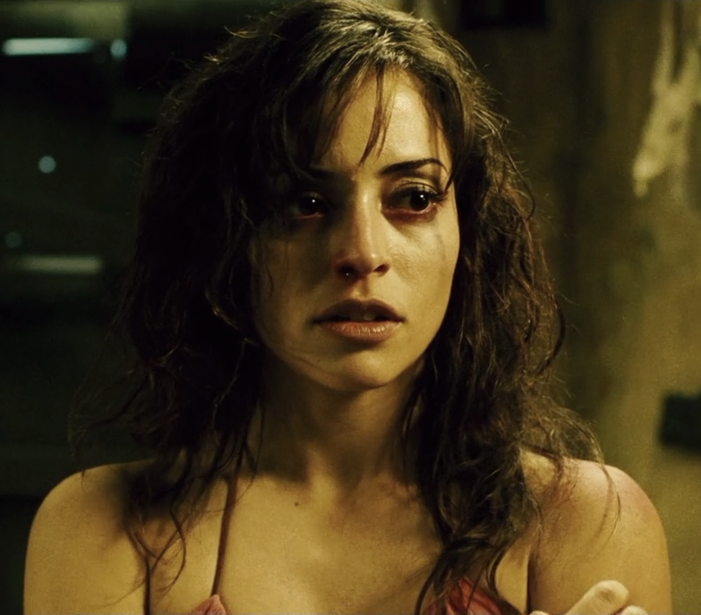
Addison
Emmanuelle Vaugier
-
-
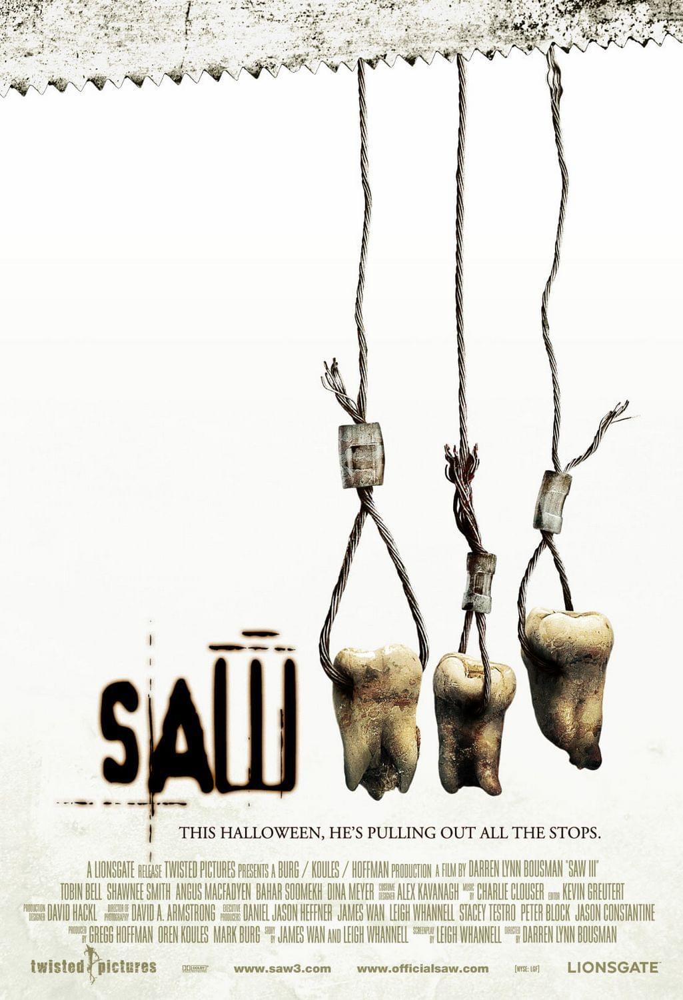
Jogos Mortais III
2006
John Kramer, conhecido como Jigsaw, submete um homem chamado Jeff a uma série de testes de sua capacidade de perdoar, depois que o filho de Jeff foi morto por um motorista bêbado, e quem está prestes a morrer são as pessoas envolvida no fim trágico de seu filho. Enquanto isso, a aprendiz de John, Amanda, sequestrou uma médica chamada Lynn e a encarregou de manter John, que está acamado com câncer terminal, vivo por tempo suficiente para que Jeff conclua seu jogo. Dessa vez, veremos até onde a sede de vingança pode influenciar nossas decisões.
Orçamento: $ 10 mi
Bilheteria: $ 165 mi
Retorno: 1.550%
-
John Kramer
Tobin Bell -
Amanda
Shawnee Smith -
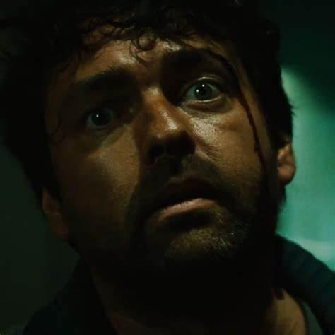
Jeff
Angus Macfadyen -
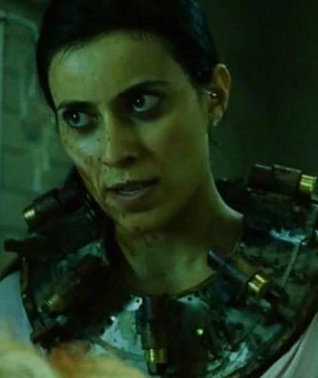
Lynn
Bahar Soomekh -
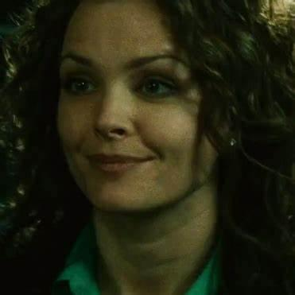
Kerry
Dina Meyer -
Jill
Betsy Russel
-
-
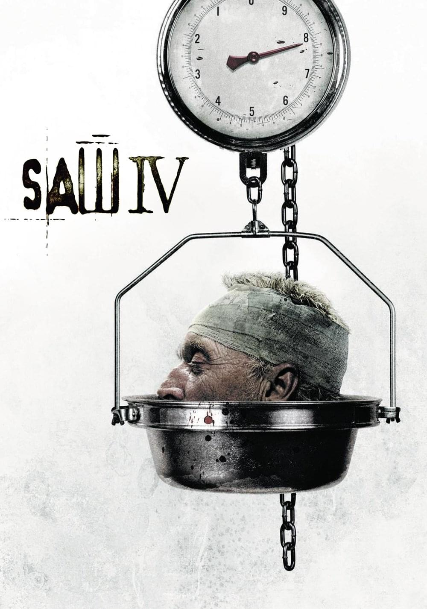
Jogos Mortais IV
2007
O filme continua de onde o filme anterior parou, com a morte de John Kramer. No entanto, é revelado que John planejou sua morte e deixou para trás uma série de gravações e pistas que levariam os investigadores ao seu último jogo. À medida que os detetives tentam desvendar o mistério do último jogo de John, eles são arrastados para uma teia de enganos e trapaças que revela mais dos motivos por trás de seus jogos letais.
Orçamento: $ 10 mi
Bilheteria: $ 139 mi
Retorno: 1.290%
-
John Kramer
Tobin Bell -
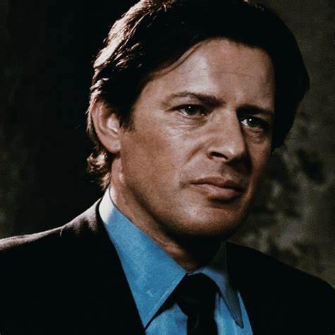
Hoffman
Costas Mandylor -
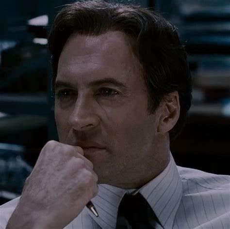
Strahm
Scott Patterson -
Perez
Athena Karkanis -
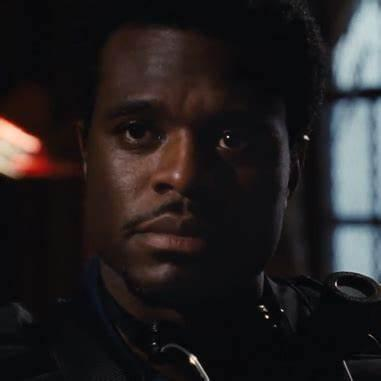
Rigg
Lyriq Bent -
Jill
Betsy Russel
-
-
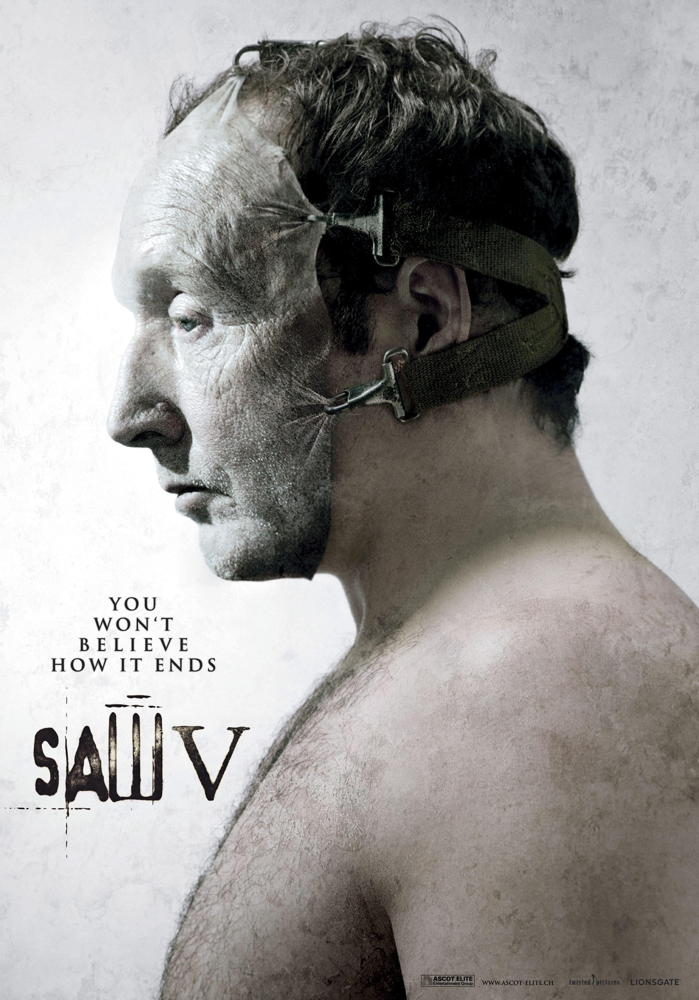
Jogos Mortais V
2008
A trama acompanha o agente do FBI Peter Strahm investigando os assassinatos cometidos pelo assassino Jigsaw, mas, à medida que se aprofunda no caso, percebe que os assassinatos fazem parte de uma trama maior e mais complexa. Enquanto isso, o cúmplice de Jigsaw, Mark Hoffman, foi promovido a tenente e tem a tarefa de liderar a investigação dos assassinatos de Jigsaw. No entanto, à medida que Strahm se aproxima da verdade, ele se torna o alvo das armadilhas de Jigsaw.
Orçamento: $ 11 mi
Bilheteria: $ 114 mi
Retorno: 934%
-
John Kramer
Tobin Bell -
Hoffman
Costas Mandylor -
Strahm
Scott Patterson -
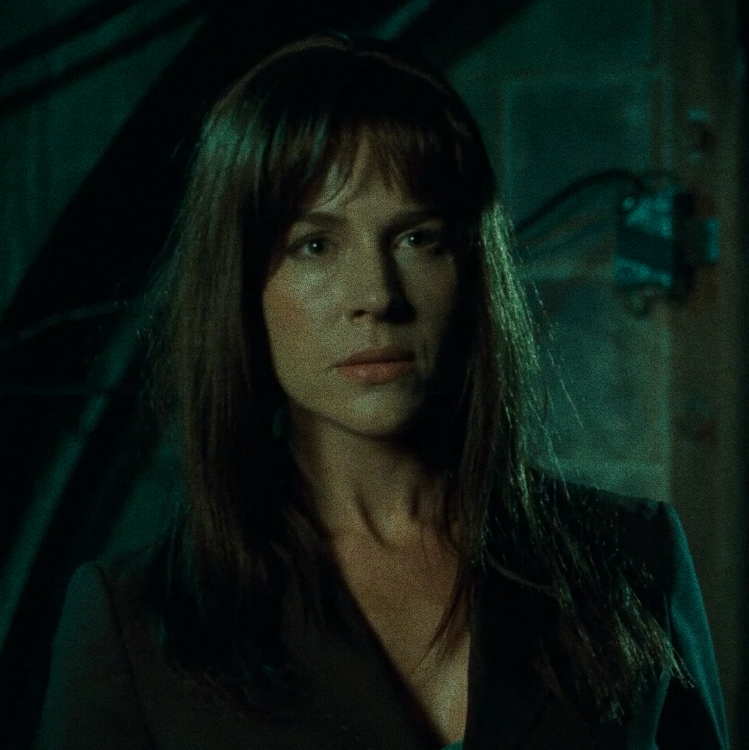
Brit
Julie Benz -
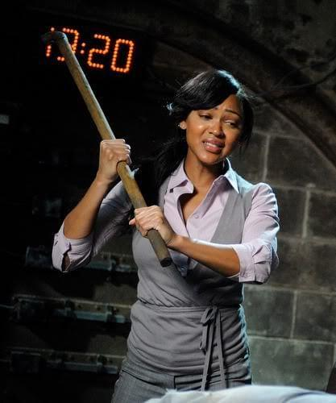
Luba
Meagan Good -
Jill
Betsy Russel
-
-

Jogos Mortais 6
2009
Saw VI mantém o foco nos efeitos póstumos do assassino Jigsaw e na progressão de seu sucessor, o tenente detetive Mark Hoffman. A trama acompanha o executivo de seguros William Easton, que deve concluir uma série de "jogos" mortais criados por Hoffman para resgatar seus funcionários e sua família. Enquanto isso, o FBI passa a suspeitar que o agente Peter Strahm, que foi incriminado por Hoffman como sendo o sucessor de Jigsaw, não era, na verdade, cúmplice de Jigsaw e reabre a investigação, fazendo com que Hoffman entre em ação para proteger sua identidade secreta.
Orçamento: $ 11 mi
Bilheteria: $ 68 mi
Retorno: 518%
-
John Kramer
Tobin Bell -
Hoffman
Costas Mandylor -
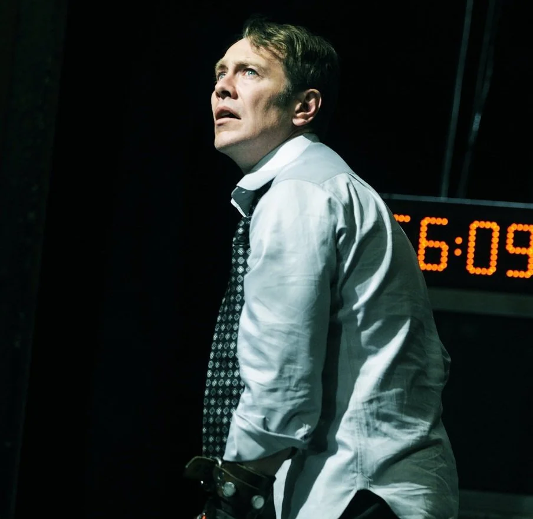
William
Peter Outerbridge -
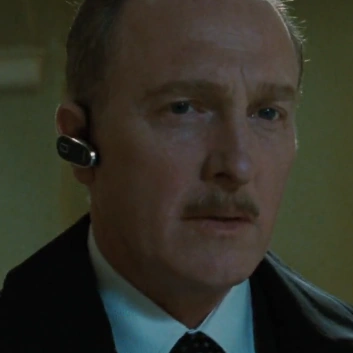
Erickson
Mark Rolston -
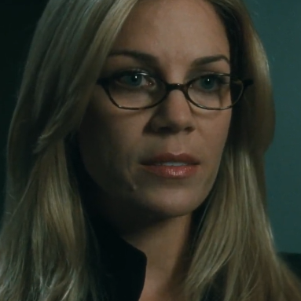
Pamela Jenkins
Samantha Lemole -
Jill
Betsy Russel
-
-
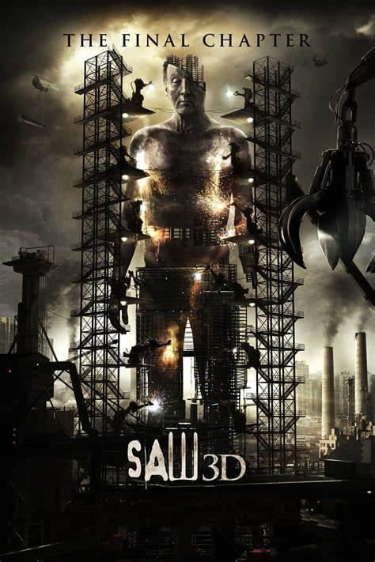
Jogos Mortais 3D
2010
A trama acompanha o autor Bobby Dagen, que, após alegar falsamente ser um sobrevivente de um dos jogos perpetrados pelo Jigsaw para se tornar uma celebridade local, se vê participando de um jogo real em que precisa salvar sua esposa. Enquanto isso, a ex-esposa de John, Jill, informa ao Departamento de Assuntos Internos que o detetive desonesto Mark Hoffman é o homem responsável pelos recentes jogos Jigsaw.
Orçamento: $ 17 mi
Bilheteria: $ 136 mi
Retorno: 700%
-
John Kramer
Tobin Bell -
Hoffman
Costas Mandylor -
Dr. Gordon
Cary Elwes -
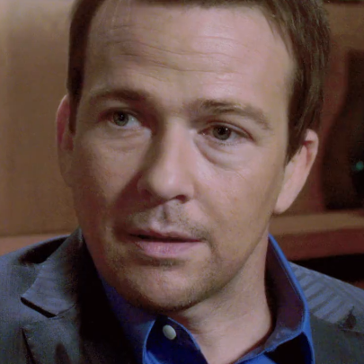
Bobby
Sean Patrick Flanery -
Joyce
Gina Holden -
Jill
Betsy Russel
-
-
Jigsaw
2017
O enredo segue um grupo de pessoas que se vê forçado a participar de uma série de "jogos" mortais dentro de um celeiro. Enquanto isso, a polícia investiga uma nova série de assassinatos que se encaixam no modus operandi do homônimo Jigsaw Killer, que está morto há quase uma década.
Orçamento: $ 10 mi
Bilheteria: $ 103 mi
Retorno: 930%
-
John Kramer
Tobin Bell -
Logan Nelson
Matt Passmore -
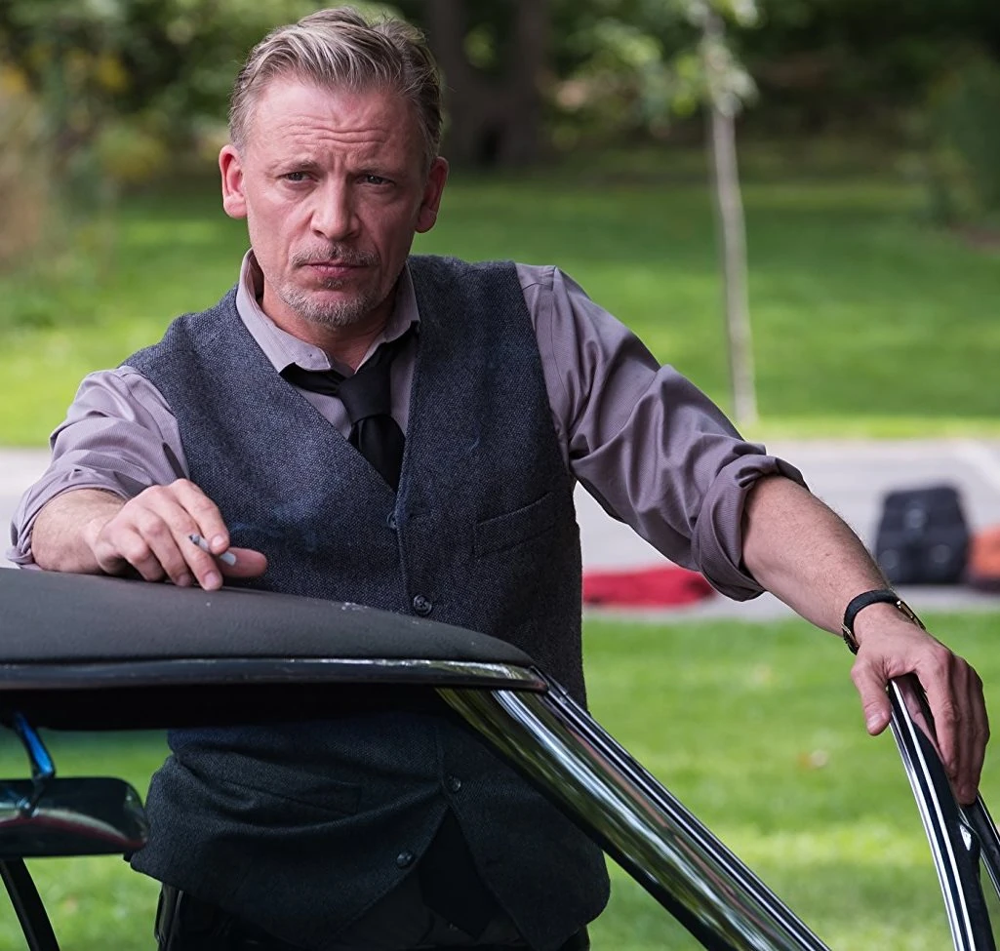
Halloran
Callum Keith Rennie -
Eleanor Bonneville
Hannah Emily Anderson -
Keith Hunt
Clé Bennett -
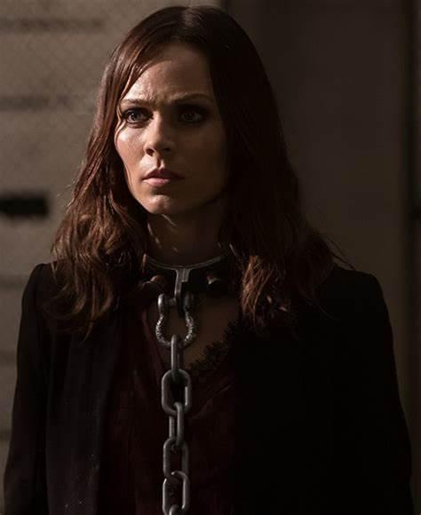
Anna
Laura Vandervoort
-
-
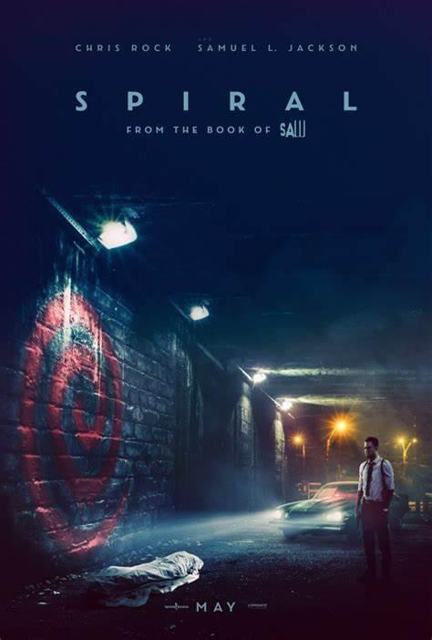
Spiral
2021
Trabalhando sob a sombra de seu pai, um estimado veterano da polícia, o impetuoso detetive Ezekiel "Zeke" Banks e seu parceiro novato assumem o comando de uma investigação sinistra de assassinatos que lembram assustadoramente o passado macabro da cidade. Sem querer, Zeke se envolve em um mistério cada vez mais profundo e se vê no centro do jogo mórbido do assassino.
Orçamento: $ 20 mi
Bilheteria: $ 41 mi
Retorno: 105%
-
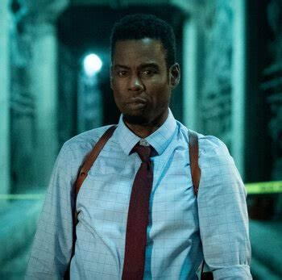
Zeke Banks
Chris Rock -
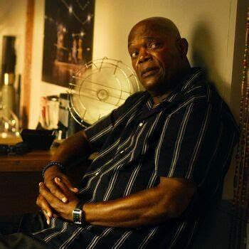
Marcus Banks
Samuel L. Jackson -
William Schenk
Max Minghella -
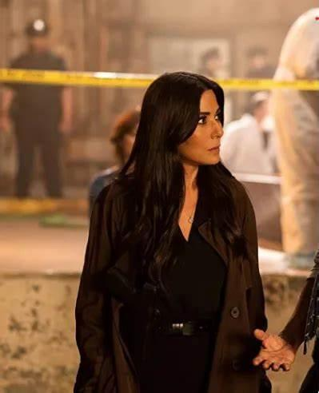
Angie Garza
Marisol Nichols -
Jeannie Lewis
Ali Johnson -
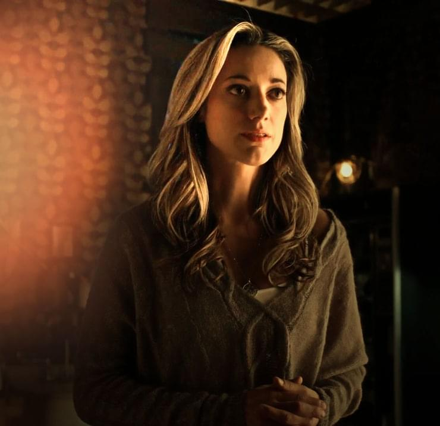
Kara Boswick
Zoie Palmer
-
-
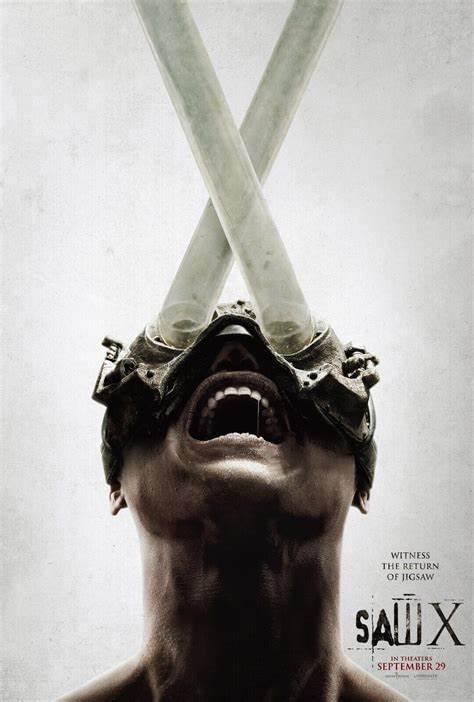
Jogos Mortais 10
2023
John Kramer está de volta. O episódio mais arrepiante da franquia SAW explora o capítulo não contado do jogo mais pessoal de Jigsaw. Situado entre os eventos de SAW I e II, John, doente e desesperado, viaja para o México para realizar um procedimento médico arriscado e experimental na esperança de uma cura milagrosa para seu câncer - apenas para descobrir que toda a operação é um esquema para fraudar os mais vulneráveis. Armado com um novo propósito, John retorna ao seu trabalho, virando o jogo contra os vigaristas de maneira visceral e característica, por meio de uma série de armadilhas engenhosas e aterrorizantes.
Orçamento: $ 13 mi
Bilheteria: $ 112 mi
Retorno: 761%
-
John Kramer
Tobin Bell -
Amanda Young
Shawnee Smith -
Cecilia Pederson
Synnøve Macody Lund -

Parker Sears
Steven Brand -
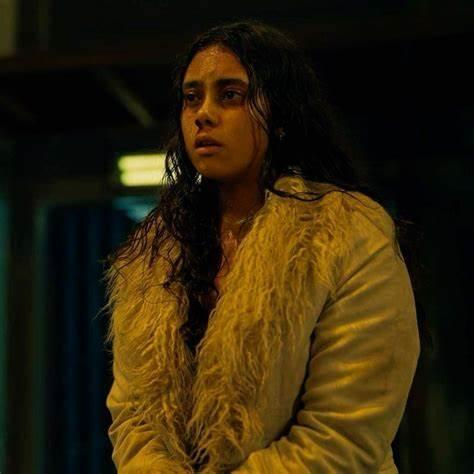
Gabriela
Renata Vaca -
Diego
Joshua Okamoto
-